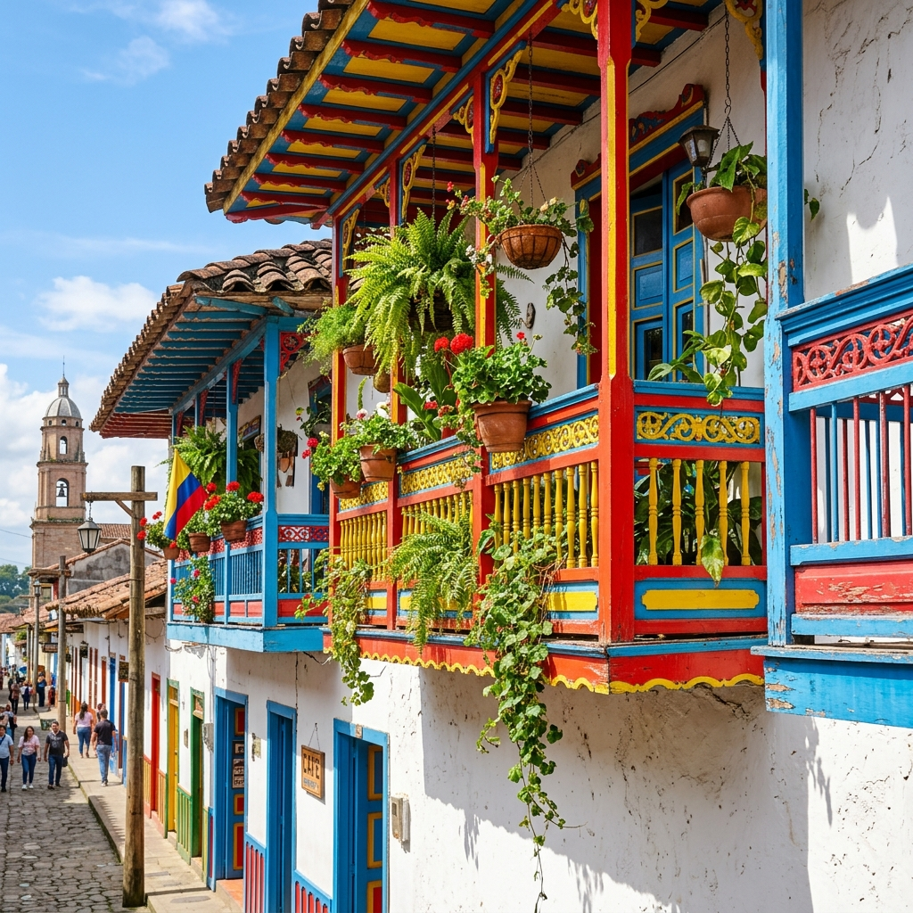

Spired Grandeur and the Ritual of Coffee
Life in Jardín pulses from its vibrant main plaza, a grand stage dominated by the soaring spires of the neo-gothic Minor Basilica of the Immaculate Conception. This architectural titan anchors a town where culinary traditions remain a point of immense local pride. Travelers must savor the freshly caught trout, served with the signature golden crunch of crispy patacones, or sample the artisanal pandequeso and decadent milk-based sweets.
However, the true soul of Jardín lies in its coffee culture. Here, the roasting process is treated as a sacred craft rather than a mere industry. The aroma of hand-roasted beans permeates the plaza, where the evening ritual of sipping exquisite, locally grown brews while people-watching remains the town’s most cherished social tradition.
Andean Wonders and the Traveler’s Ledger
Beyond the cobblestones, Jardín serves as a gateway to high-altitude adventure. Nature lovers can embark on horseback rides through rugged mountain trails or explore the breathtaking Cave of Splendor. A highlight for any ornithologist is the Andean Cock-of-the-rock nature reserve, where dawn sightings reveal the vibrant plumage of these rare birds in their natural habitat.

Despite its high-impact experiences, the town remains remarkably accessible. A daily budget of $50 - $80 USD easily accommodates transportation, local dining, and stays in boutique hotels or preserved colonial homes. For a more secluded retreat, options abound, ranging from rustic countryside cabins to sophisticated glamping sites nestled within the surrounding coffee plantations.